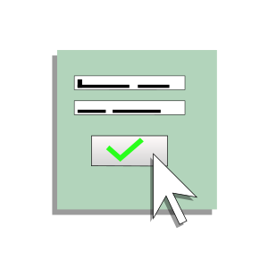
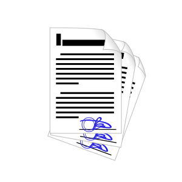
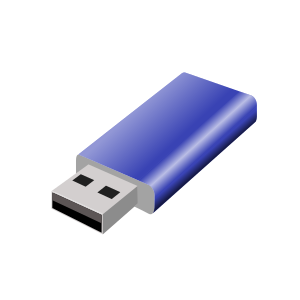
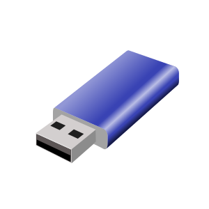

{% extends 'esign/template.html' %}
{% block 'content' %}
Для получения ЭЦП Вам нужно сделать всего лишь 2 простых шага:
|


|
Оставьте заявку на нашем сайте или по телефону. После этого с Вами свяжется оператор для уточнения заказа, затем мы подготовим необходимые документы и ключ электронной подписи. |
 

|
В назначенное Вами время и место доставки прибудет курьер. Чтобы завершить процесс получения Вам нужно предоставить паспортные данные и оставить образец подписи, после чего Вы получите флеш-носитель с протоколом ЭП и можете пользоваться приобретённым продуктом. |
{% endblock %}